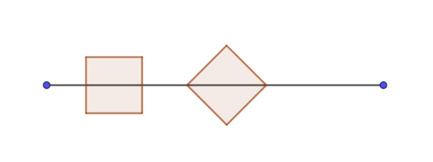

Sam and Tom are trying a game of (partially) covering a given line segment of length $L$ by taking turns in placing unit squares onto the line segment.
As illustrated below, the squares may be positioned in two different ways, either "straight" by placing the midpoints of two opposite sides on the line segment, or "diagonal" by placing two opposite corners on the line segment. Newly placed squares may touch other squares, but are not allowed to overlap any other square laid down before.
The player who is able to place the last unit square onto the line segment wins.

With Sam starting each game by placing the first square, they quickly realise that Sam can easily win every time by placing the first square in the middle of the line segment, making the game boring.
Therefore they decide to randomise Sam's first move, by first tossing a fair coin to determine whether the square will be placed straight or diagonal onto the line segment and then choosing the actual position on the line segment randomly with all possible positions being equally likely. Sam's gain of the game is defined to be 0 if he loses the game and $L$ if he wins. Assuming optimal play of both players after Sam's initial move, you can see that Sam's expected gain, called $e(L)$, is only dependent on the length of the line segment.
For example, if $L=2$, Sam will win with a probability of $1$, so $e(2)= 2$.
Choosing $L=4$, the winning probability will be $0.33333333$ for the straight case and $0.22654092$ for the diagonal case, leading to $e(4)=1.11974851$ (rounded to $8$ digits after the decimal point each).
Being interested in the optimal value of $L$ for Sam, let's define $f(a,b)$ to be the maximum of $e(L)$ for some $L \in [a,b]$.
You are given $f(2,10)=2.61969775$, being reached for $L= 7.82842712$, and $f(10,20)=
5.99374121$ (rounded to $8$ digits each).
Find $f(200,500)$, rounded to $8$ digits after the decimal point.